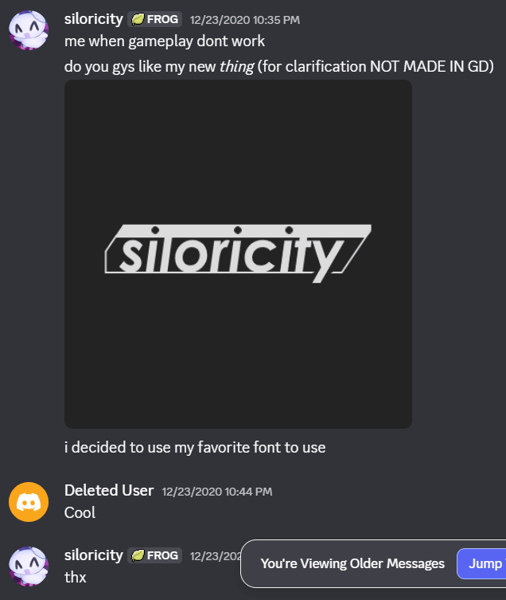

Rn, my favorite font is Exo. U can probably tell since
almost everything I create uses that font, including the text
box you're reading right now.
I found it through its use in Arcaea - New Dimension Rhythm Game.
While testing out visuals I chose that font as the first thing I could think of,
and now it's part of my visual identity, my design language.
My previous favorite font (that I still like a lot) is Century Gothic.
It is the font used in my logo down there in the corner.
That logo was created wayyy back in the day. I managed to find The Ancient Message™ where it originated, in a Discord server I'm no longer part of. (I used my Mysterious Alt Account to take this screenshot recently)
(it was a mostly gd server back then)
Now to get to the point of the blog's title.
I made that logo using paint.net
Yeah.
I genuinely have no clue how I made something
look like that with just text and brushes, but I did.
The worst part is, it's only 500 pixels and I never saved the logo with
transparency. (Or maybe I did, I lost most of my data in 2022)
So it was permanently on that shade of gray.
Most if not all art that I create nowadays is made with Inkscape. I enjoy the process of combining shapes together with outlines and gradients, the non-destructive editing process. Apparently GIMP has non-destructive editing now? But that shit jank af.
Anyway.. so like
Other software that I use. I know I just roasted GIMP but I do use it a lot
as a sort of general image manipulation program.
Most videos on my You Tube Channel are edited using Shotcut Video Editor.
It's.. not good lmao. The size & rotate filter is terribly optimized and
in general the software is very slow, but I like it.
I like how precise I can edit my clips and the level of detail on the
export menu is really nice.
Most alternate video editors that I try out are either super monetized,
doesn't have features that I'm looking for,
or is just way too complex for me to be bothered learning how to use.